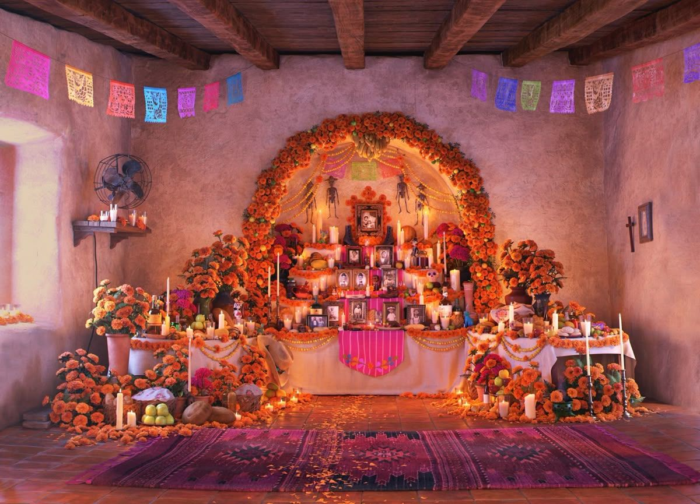

¿QUÉ ES UN ALTAR?
El altar de muertos es una tradición mexicana dedicada a recordar y honrar a nuestros seres queridos que han fallecido. Se llena de flores, veladoras, comida y fotografías.
¿QUÉ SIGNIFICA?
Representa el amor, la memoria y la unión entre las familias. Cada elemento tiene un significado especial.

SU ORIGEN
Esta celebración reúne tradiciones indígenas de México con costumbres católicas que llegaron durante la época colonial.
¿CUÁNDO SE COLOCA?
Principalmente durante los días 1 y 2 de noviembre, aunque algunas familias comienzan a prepararlo desde días antes.
¿CUÁNTOS NIVELES TIENE EL ALTAR?
2 NIVELES
Representan el cielo y la tierra.
3 NIVELES
Representan el cielo, la tierra y el inframundo.
7 NIVELES
Representan los pasos que debe recorrer el alma para alcanzar el descanso eterno.
ELEMENTOS CLAVE PARA REALIZAR UN ALTAR ✿
ELEMENTOS DE LA OFRENDA 🏵️
Su color y aroma guían a las almas hacia la ofrenda.
Representan la luz que ilumina el camino.
Es uno de los alimentos más representativos de la celebración.
Se ofrece para calmar la sed de las almas.
¡AQUÍ EN MÉXICO, RECORDAR ES CELEBRAR!
Una tradición llena de historia, amor y orgullo mexicano.